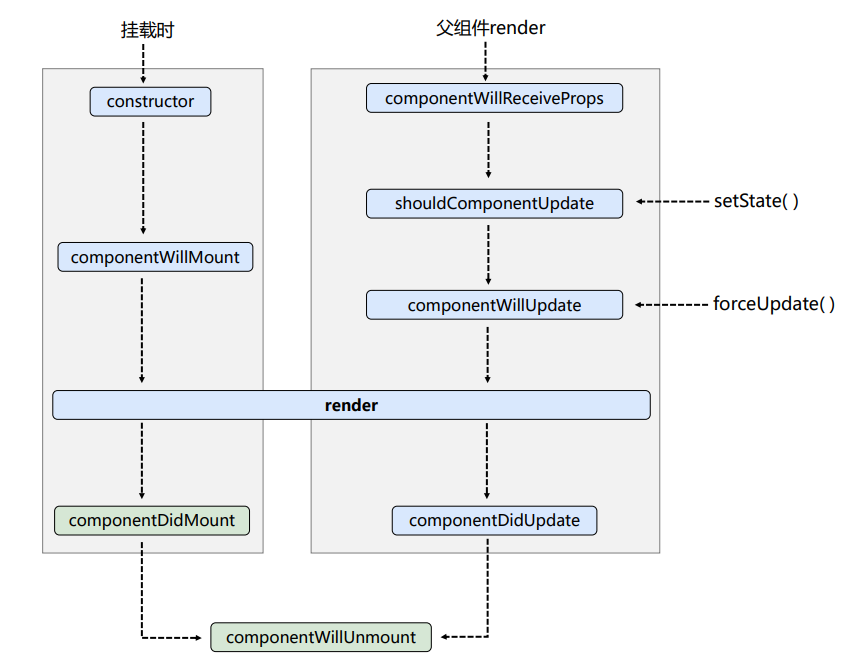
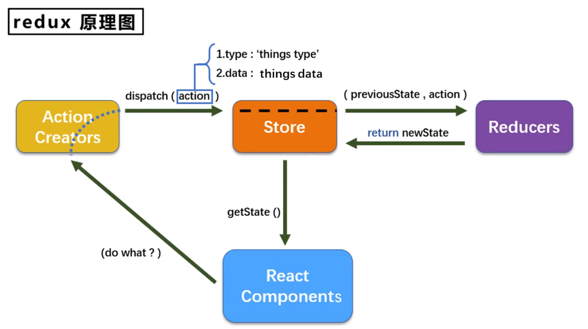
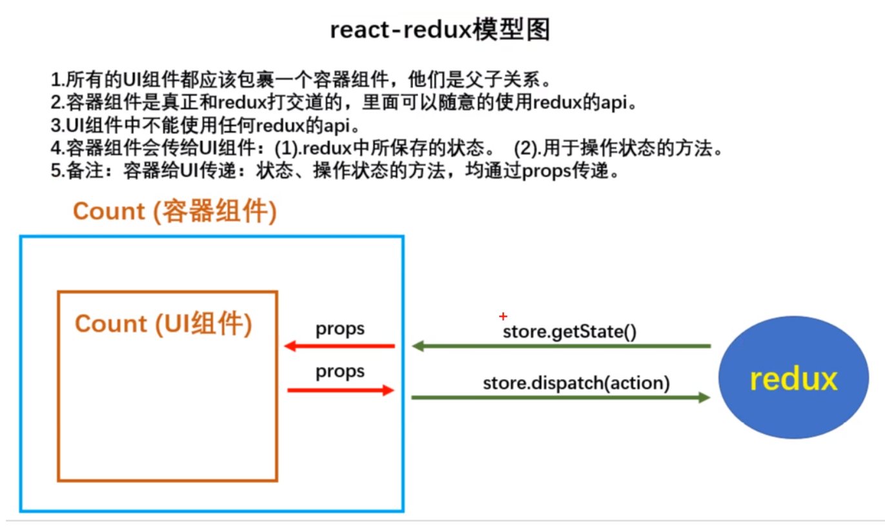

- 在html中简易使用jsx语法时，需要引入babel插件，同时设置
<script type="text/babel"></script> - js语法创建虚拟DOM：
React.createElement('h1', {id: 'test'}, 'Hello, React') - 关于虚拟DOM：
- 本质就是Object类型的对象
- 虚拟DOM是React内部用，无需真实DOM上那么多属性
- 虚拟DOM最终会被转换为真实DOM
- JSX语法规则：
- 定义虚拟DOM时，不要加引号，如
<h1>我是虚拟DOM</h1> - 标签中混入js表达式时需要用
{} - 添加类名时需要用小驼峰
className，不要用class - 使用内联样式
style时，需要使用{{}}，里边的{}表示对象。如{{color: 'red'; fontSize: 'px'}}，里边的属性需要使用小驼峰替代-的写法 - 只能有一个跟标签
- 标签必须闭合
- 标签的首字母：
- 如果是小写字母开头，则将标签转为html中同名标签，如果html中没有对应标签，则报错
- 如果是大写字母开头，react就去渲染对应组件，若组件未定义，则报错
- 定义虚拟DOM时，不要加引号，如
- js语句（代码）与js表达式
- js语句：
if () {}for () {}switch () {}- ...
- js表达式
aa+barr.map()function test () {}
- 总结：js表达式有返回值，能直接赋值给变量
- js语句：
- 函数定义的组件：执行
ReactDOM.render(<MyComponent />, ...)之后发生了什么？- React解析组件标签，找到了
MyComponent组件 - 发现组件使用函数定义，随后调用该函数，将返回的虚拟DOM转为真实DOM，随后呈现在页面中
- React解析组件标签，找到了
- 类定义的组件：执行
ReactDOM.render(<MyComponent />, ...)之后发生了什么？- React解析组件标签，找到了
MyComponent组件 - 发现组件使用类定义，随后
new出来该类的实例，并通过实例调用原型上的render()方法 - 将render返回的虚拟DOM转为真实DOM，随后呈现在页面中
- React解析组件标签，找到了
- 组件
实例的三大核心属性：state:- 初始化状态（不用构造器）：
state = {} - 不可直接更改，需要借助内置的API：
setState({})
- 初始化状态（不用构造器）：
props- 批量传递标签属性：
{...p}2.对props进行限制：
// prop-types.js static propTypes = { name: PropTypes.string.isRequired, age: PropTypes.number, fun: PropTypes.func } static defaultProps = { age: 18 }- props是只读的，不能更改
- 构造器是否接受
props,是否传给super,取决于：是否希望在构造器中通过this访问props
- 批量传递标签属性：
refs- 字符串形式的
ref：<input ref='input1' />(效率不高，不推荐，可能废弃) - 回调函数形式
ref：<input ref={(currentNode) => {this.input1 = currentNode}}/>- 回调函数执行次数问题
- 内联函数：更新过程会被执行两次, 第一次传参
null, 第二次传参DOM元素, 这是因为在每次渲染时会创建一个新的函数实例，所以 React 清空旧的 ref 并且设置新的 - class的绑定函数可以避免上述问题
func = c => { this.input1 = c; } `<input ref={this.func} />` - 内联函数：更新过程会被执行两次, 第一次传参
- 回调函数执行次数问题
createRef
// React.createRef调用后可以返回一个容器，该容器可以存储被ref所标识的节点，该容器是“专人专用”的 myRef = React.createRef() showData = () => { console.log(this.myRef.current.value); }- 字符串形式的
- 展开运算符:
...常用的几种用法- 在数组中使用
let arr1 = [1, 2, 3]; let arr2 = [4, 5, 6]; let arr3 = [...arr1, ...arr2]; // 连接数组 [1, 2, 3, 4, 5, 6]- 在函数中使用
function sum(...numbers) { return numbers.reduce((preValue, currentValue) => { return preValue + currentValue; }); }- 构造字面量对象时使用展开语法
let person = {name: 'tom', age: 19}; let person2 = {...person}; // console.log(...person); // 报错，展开运算符不能展开对象 person.name = 'jerry'; console.log(person2); // {name: 'tom', age: 19} console.log(person); // {name: 'jerry', age: 19} // 合并 let person3 = {...person, name: 'jack', address: '地球'}; console.log(person3); // {name: 'jack', age: 19, address: '地球'} - React中的事件处理
- 通过onXxx属性指定事件处理函数（注意大小写）
- React使用的是自定义（合成）事件，而不是使用的原生DOM事件————为了更好的兼容性
- React中的事件是通过事件委托方式处理的（委托给组件最外层的元素）————为了更高效
- 通过event.target得到发生事件的DOM元素对象————不要过渡的使用ref
showData = event => {
console.log(event.target.value);
}
<input onBlur={this.showData} />
- 受控组件和非受控组件
- 非受控组件：现用现取
- 受控组件：随着输入维护状态(State)--推荐
- 高阶函数和函数柯里化
- 高阶函数：如果一个函数符合下面2个规范中的任何一个，那该函数就是高阶函数
- 若A函数接收的
参数是一个函数，那么A就可以称为高阶函数 - 若A函数，调用的
返回值依然是一个函数，那么A就可以称为高阶函数 - 常见的高阶函数：
Promise,setTimeout,arr.map()
- 若A函数接收的
// 柯里化方式
handleFormData(dataType) {
return (event) => {
this.setState({
[dataType]: event.target.value
})
}
}
<input onChange={this.handleFormData('username')} type="text" name="username"/>
<input onChange={this.handleFormData('password')} type="password" name="password"/>
// 非柯里化方式
handleFormData(dataType, event) {
this.setState({
[dataType]: event.target.value
})
}
<input onChange={event => this.handleFormData('username', event)} type="text" name="username"/>
<input onChange={event => this.handleFormData('password', event)} type="password" name="password"/>
- 函数的柯里化：通过函数调用继续返回函数的方式，实现多次接收参数最后统一处理的函数编码形式
- React的生命周期
生命周期回调函数 <=> 生命周期钩子函数 <=> 生命周期函数 <=> 生命周期钩子
卸载组件：
React.unmountComponentAtNode(document.getElementById('root'))

- 初始化阶段：由
React.render()触发---初次渲染constructor()componentWillMount()render()componentDidMount()===>常用：一般在这个钩子中做一些初始化的事，例如：开启定时器、订阅消息、发送网络请求
- 更新阶段：由组件内部
this.setState()或父组件render触发shouldComponentUpdate()componentWillUpdate()render()===>必须使用componentDidUpdate()
- 卸载阶段：由
React.unmountComponentAtNode()触发componentWillUnmount()===>常用：一般在这个钩子中做一些收尾的事，例如：关闭定时器、取消订阅

- 初始化阶段：由
React.render()触发---初次渲染constructor()getDerivedStateFromProps()render()componentDidMount()===>常用：一般在这个钩子中做一些初始化的事，例如：开启定时器、订阅消息、发送网络请求
- 更新阶段：由组件内部
this.setState()或父组件render触发shouldComponentUpdate()getDerivedStateFromProps()render()===>必须使用getSnapshotBeforeUpdate()componentDidUpdate()
- 卸载阶段：由
React.unmountComponentAtNode()触发componentWillUnmount()===>常用：一般在这个钩子中做一些收尾的事，例如：关闭定时器、取消订阅
- DOM的Diffing算法
经典面试题：
- React/Vue中的key有什么作用？（key的内部原理是什么？）
- 为什么遍历时，key最好不用index？
- 虚拟DOM中key的作用：
- 简单地说：key是虚拟DOM的标识，在更新显示时key起着极其重要的作用
- 详细的说：当状态中的数据发生变化时，React会根据【新数据】生成【新的虚拟DOM】，随后React进行【新虚拟DOM】与【旧虚拟DOM】的diff比较，比较规则如下：
- 旧虚拟DOM中找到了与新虚拟DOM相同的key：
- 若虚拟DOM中内容没变，则使用之前的真实DOM
- 若虚拟DOM中内容变了，则生成新的真实DOM，随后替换掉页面中之前的真实DOM
- 旧虚拟DOM中没有找到与新虚拟DOM相同的key：
- 根据数据创建新的真实DOM，随后渲染到页面中
- 旧虚拟DOM中找到了与新虚拟DOM相同的key：
- 用index作为key可能会引发的问题：
- 若对数据进行：逆序添加、逆序删除等破坏顺序的操作：会产生不必要的真实DOM更新===>界面效果没问题，但效率低
- 如果结构中还包含输入类的DOM：会产生错误的DOM更新===>界面有问题
- 注意，如果不存在数据的逆序添加、逆序删除等破坏顺序的操作，仅用于显示列表用于展示，使用index作为key是没有问题的
- 开发中如何选择key？
- 最好使用每条数据的唯一标识作为key，比如id、手机号、身份证号、学号等唯一标识
- 如果确定只是简单的展示数据，用index也是可以的
-
安装React脚手架：
npm install -g create-react-app -
uuid和nanoid库，用于生成唯一的ID值 -
todoList案例相关知识点：
- 拆分组件、实现静态组件，注意：
className、style的写法 - 动态初始化列表，如果确定将数据放在哪个组件的
state中?- 某个组件使用：放在其自身的
state中 - 某些组件使用：放在他们共同的父组件
state中（官方称为：状态提升）
- 某个组件使用：放在其自身的
- 关于父子组件之间通信：
- 父组件给子组件传递数据：通过
props传递 - 子组件给父组件传递数据：通过
props传递，要求父组件提前给子组件传递一个函数
- 父组件给子组件传递数据：通过
- 注意
defaultChecked和checked的区别，类似的还有defaultValue和value：default开头的只在初次渲染起作用。 - 状态在哪里，操作状态的方法就在哪里
- 拆分组件、实现静态组件，注意：
-
axios- 封装
XmlHttpRequest对象的ajax promise风格- 可以在浏览器端和node服务端使用
- 封装
-
React配置代理
-
方式一:
// package.json "proxy": "http://localhost:5000" // 3000端口没有的才转发给5000 -
方式二：
// src/setupProxy.js // common js const proxy = require('http-proxy-middleware') module.exports = function(app) { app.use( proxy(/api1, { target: 'http://localhost:5000', changeOrigin: true, // 控制服务器收到的请求头中Host字段的值 pathRewrite: {'^/api1': ''} }), proxy(/api2, { target: 'http://localhost:5001', changeOrigin: true, pathRewrite: {'^/api2': ''} }) ) }
-
-
连续解构赋值
let obj = {a: {b: {c: 1}}};
const {a:{b:{c}}} = obj; // c: 1
// 同时重命名
const {a:{b:{c:data}}} = obj; // data: 1
-
消息订阅与发布机制：
PubSubJSnpm install pubsub-jsimport PubSub from 'pubsub-js'- 订阅消息
let token = PubSub.subscribe('msgName', (data) => {...}) - 发布消息
PubSub.publish('msgName', data) - 取消订阅
PubSub.unsubscribe(token)
-
Fetch:原生函数，不再使用XmlHttpRequest对象提交ajax请求，老版本浏览器可能不支持（关注分离的设计思想） -
React路由：
react-router-dom- 明确好界面的导航区和展示区
- 导航区的a标签改为
<Link to="/xxx">Demo</Link>,<NavLink activeClassName={active-style}></NavLink> - 展示区写
Route标签进行路径匹配:<Route path="/xxx' component={Demo} /> - 在
<App />的最外侧包裹<BrowserRouter>或<HashRouter>
-
一般组件和路由组件
- 写法不同：
- 一般组件：
<Demo /> - 路由组件：
<Route path="/demo" component={Demo}>
- 一般组件：
- 存放位置不同
- 一般组件：
components - 路由组件：
pages
- 一般组件：
- 接收到的
props不同- 一般组件：写组件标签时传递了什么，就能收到什么
- 路由组件：接收到三个固定的属性
history: go: f go(n) goBack: f goBack() goForward: f goForWard() push: f push(path, state) replace: f replace(path, state) location: pathname: "/about" search: "" state: undefined match: params: {} path: "/about" url: "/about"
- 写法不同：
-
解决多级路径刷新页面样式丢失问题
- public/index.html中引入样式不用相对路径
./,而是用绝对路径/（常用） - public/index.html中引入样式用
%PUBLIC_URL%(常用) - 使用
HashRouter
- public/index.html中引入样式不用相对路径
-
<Switch></Switch>解决路由多次匹配问题（单一匹配，提高效率） -
封装
<MyNavLink></MyNavLink>:this.props.children,{...props} -
路由的模糊匹配和严格匹配（
exact）- 默认使用模糊匹配（输入的路径和必须包含匹配的路径，且顺序要一致）
- 开启严格匹配
<Route exact path="/demo" component={Demo} /> - 严格模式不要随便开启，需要再开启，有些时候开启会导致无法继续匹配二级路由
-
<Redirect>的使用- 一般卸载所有路由注册的最下方，当所有路由都无法匹配时，跳转到Redirect指定的路由
<Switch>
<Route path="/about" components={About} />
<Route path="/home" components={Home} />
<Redirect to="/about" />
</Switch>
- 嵌套路由
- 注册子路由时要写上父路由的
path - 路由的匹配是按照路由注册的顺序进行的
-
向路由组件传递参数
params参数- 路由链接（携带参数）：
<Link to="/demo/test/tom/18">详情</Link> - 注册路由（声明接收）：
<Route path="/demo/test/:name/:age" component={Test}> - 接收参数：
const {name, age} = this.props.match.params
- 路由链接（携带参数）：
search参数- 路由链接（携带参数）：
<Link to="/demo/test?name=tom&age=18">详情</Link> - 注册路由（无需声明，正常注册即可）：
<Route path="/demo/test" component={Test} /> - 接收参数：
const {search} = this.props.location - 获取到的
search是urlencoded编码字符串，需要借助querystring解析import qs from 'querystring' let {name, age} = qs.parse(search.slice(1)) // search.slice(1) 是为了去掉开头的 ?
- 路由链接（携带参数）：
state参数- 路由链接（携带参数）：
<Link to={{path: '/demo/test', state: {name: 'tom', age: 18}}}>详情</Link> - 注册路由（无需声明，正常注册即可）：
<Route path="/demo/test" component={Test} /> - 接收参数：
this.props.location.state - 备注：刷新也可以保留住参数
- 路由链接（携带参数）：
-
push和replace -
编程式路由导航
借助this.props.history对象上的API对操作路由跳转、前进、后退
this.props.history push()this.props.history.replace()this.props.history.goBack()this.props.history.goForward()this.props.history.go()
withRouter
import {withRouter} from 'react-router-dom'
class Demo extends ...
export default withRouter(Demo)
// withRouter可以加工一般组件，让一般组件具备路由组件所特有的API
// withRouter的返回值是一个新组件
-
BrowserRouter与HashRouter的区别- 底层原理不一样：
BrowserRouter使用的是H5的history API，不兼容IE9以下版本。HashRouter使用的是URL的哈希值
- path表现形式不一样
BrowserRouter的路径中没有#，例如：localhost:3000/demo/testHashRouter的路径中包含#，例如：localhost:3000/#/demo/test
- 刷新后对路由
state参数的影响BrowserRouter没有任何影响，因为state保存在history对象中。HashRouter刷新后会导致路由state参数的丢失。
- 备注：
HashRouter可以用于解决一些路径错误相关的问题。
- 底层原理不一样：
-
antd的按需引入+自定义主题-
安装依赖：
yarn add react-app-rewired customize-cra babel-plugin-import less less-loader -
修改
package.json... "scripts": { "start": "react-app-rewired start", "build": "react-app-rewired build", "test": "react-app-rewired test", "eject": "react-scripts eject" }, ... -
根目录下创建
config-overrides.js// 配置具体的修改规则 const { override, fixBabelImports, addLessLoader } = require('customize-cra'); module.exports = override( fixBabelImports('import', { libraryName: 'antd', libraryDirectory: 'es', style: true, }), addLessLoader({ lessOptions: { javascriptEnabled: true, modifyVars: { '@primary-color': 'green' }, } }) ) -
备注：不用在组件里亲自引入样式了，即：
import 'antd/dist/antd.css应该删掉
-
Redux§
redux是一个专门用于做状态管理的JS库（不是react插件库）
作用：集中式管理react应用中多个组件共享的状态
什么情况下需要使用redux
- 某个组件的状态，需要让其他组件可以随时拿到（共享）。
- 一个组件需要改变另一个组件的状态（通信）。
- 总体原则：能不用就不用，如果不用比较吃力才考虑使用。
Redux原理图

redux的三个核心概念§
-
action- 动作的对象
- 包含2个属性
- type：标识属性，值为字符串，唯一，必要属性
- data：数据属性，值类型任意，可选属性
- 例子：
{type: 'ADD_STUDENT', data: { name: 'tom', age: 18 }}
-
reducer- 用于初始化状态、加工状态
- 加工时，根据旧的
state和action，产生新的state的纯函数
-
store- 将
state、action、reducer联系在一起的对象 - 如何得到此对象？
import {createStore} from 'redux'import reducer from './reducers'const store = createStore(reducer)
- 此对象的功能？
getState()：得到statedispatch(action)：分发action，触发reducer调用，产生新的statesubscribe(listener)：注册监听，当产生了新的state时，自动调用
- 将
项目简单应用§
- 去除组件自身需要共享的状态
- 建立文件夹和文件
-src
--redux
---store.js
---count_reducer.js
---constant.js
---count_action.js
store.js
import { createStore } from 'redux'
import countReducer from './count_reducer'
export default createStore(countReducer)
count_reducer.js
import { INCREMENT, DECREMENT } from './constant'
const initPreState = 0
export default function countReducer(preState=initPreState, action) {
const { type, data } = action
switch(type) {
case INCREMENT:
return preState + data
case DECREMENT:
return preState - data
default:
return preState
}
}
- 在
index.js中检测store中状态的改变，一旦发生改变重新渲染<App />
备注：redux只负责管理状态，至于状态的改变驱动着页面的展示，需要自己写。
import React from 'react'
import ReactDOM from 'react-dom'
import store from 'redux'
ReactDOM.render(<App />, document.getElementById('root'))
store.subscribe(() => {
ReactDOM.render(<App />, document.getElementById('root'))
})
count_action.js
// 专门用于创建action对象
import { INCREMENT, DECREMENT } from './constant'
export const createIncrementAction = data => ({type: INCREMENT, data})
export const createDecrementAction = data => ({type: DECREMENT, data})
constant.js
// 定义action对象中type类型的常量值
export const INCREMENT = 'increment'
export const DECREMENT = 'decrement'
Action类型§
-
同步
action：Object -
异步
action：Function
异步action使用：
- 明确：延迟的动作不想交给组件自身，想交给action
- 何时需要异步action：想要对状态进行操作，但是具体的数据靠异步任务返回（非必须)
- 创建action的函数不再返回一般对象，而是返回一个函数，该函数中写异步任务
- 异步action不是必须要写的，完全可以自己等待异步任务的结果后再去分发同步action
- 具体编码
// 安装redux-thunk，并配置在store中
// yarn add redux-thunk
// store.js
import { createStore, applyMiddleware } from 'redux'
import countReducer from './count_reducer'
import thunk from 'redux-thunk'
export default createStore(countReducer, applyMiddleware(thunk))
// count_action.js
// 同步action
export const createIncrementAction = data => ({type: INCREMENT, data})
// 异步action
export const createIncrementAsyncAction = (data, time) = {
return (dispatch) => {
setTimeout(() => {
dispatch(createIncrementAction(data))
},time)
}
}
react-redux§

// 安装react-redux
// yarn add react-redux
// 创建容器组件
// src/containers/Count/index.jsx
// 引入Count的UI组件
import CountUI from '../../components/Count'
import {createIncrementAction, createDecrementAction, createIncrementAsyncAction} from '../../redux/count_action'
// 引入connect用于连接UI组件与redux
import {connect} from 'react-redux'
/*
1.mapStateToProps函数返回一个对象
2.返回的对象中的key就作为传递给UI组件props的key，value就作为传递给UI组件props的value
3.mapStateToProps用于传递状态
*/
function mapStateToProps(state) {
return {count: state}
}
/*
1.mapDispatchToProps函数返回的是一个对象
2.返回的对象中的key就作为传递给UI组件props的key，value就作为传递给UI组件props的value
3.mapDispatchToProps用于传递操作状态的方法
*/
function mapDispatchToProps(dispatch) {
return {
increment: number => dispatch(createIncrementAction(number)),
decrement: number => dispatch(createDecrementAction(number)),
incrementAsync: number => dispatch(createIncrementAsyncAction(number))
}
}
// 使用connect()()创建并暴露一个Count的容器组件
export default connect(mapStateToProps, mapDispatchToProps)(CountUI)